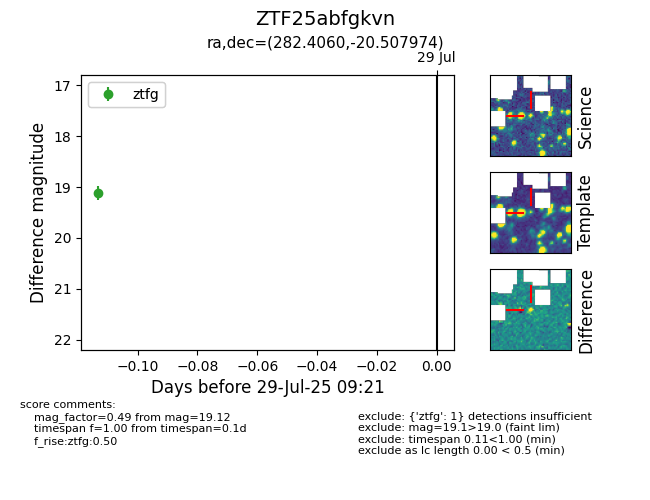

Target ZTF25abfgkvn at 2025-07-29 09:21, see:
FINK: fink-portal.org/ZTF25abfgkvn
Lasair: lasair-ztf.lsst.ac.uk/objects/ZTF25abfgkvn
ALeRCE: alerce.online/object/ZTF25abfgkvn
alt names
ZTF25abfgkvn (ztf,fink)
coordinates:
equatorial (ra, dec) = (282.4060,-20.50797)
galactic (l, b) = (14.3332,-8.80959)
photometry
last ztfg=19.12
1 ztfg detections
